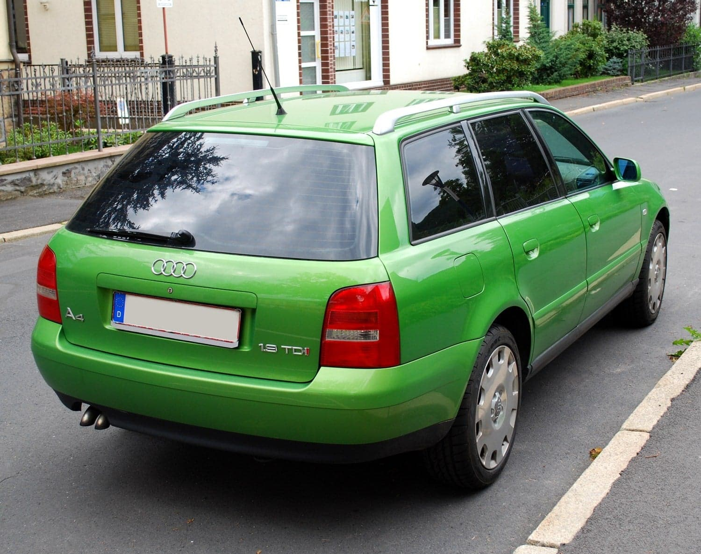
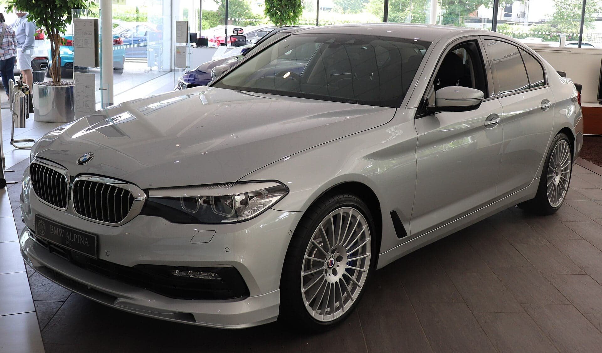
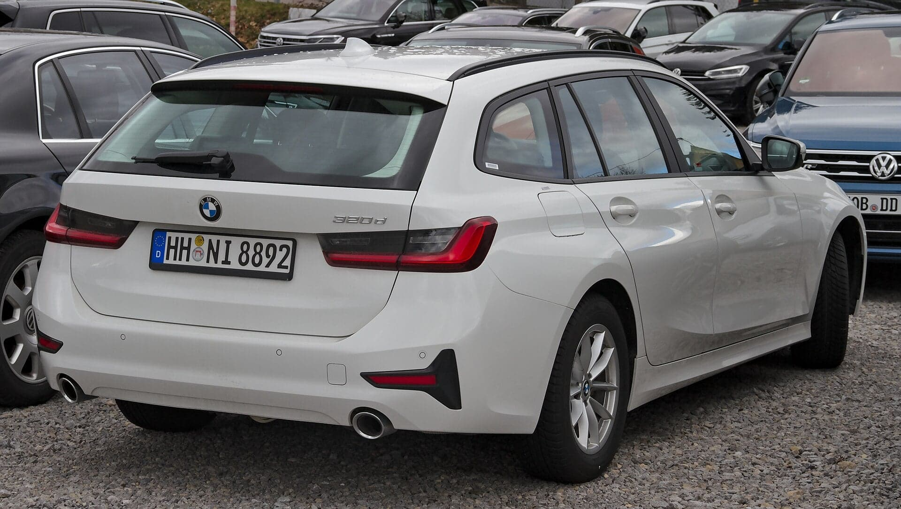

−$300

$3 900
Audi A4 Avant 1.9 TDI
2001 · 247 тис. км · Механіка
Написати

$8 900
BMW 5 Series 520d
2010 · 214 тис. км · Автомат
Написати
НОВЕ
$9 400$9 900
BMW 3 Series 320d
2012 · 188 тис. км · Автомат
Написати

$7 600
Audi A4 2.0 TFSI
2011 · 176 тис. км · Автомат
Написати

$9 900
BMW 5 Series 530i
2011 · 201 тис. км · Автомат
Написати
−$500

$6 700
BMW 3 Series Touring
2009 · 232 тис. км · Механіка
Написати

$9 700
BMW X5 3.0d
2008 · 259 тис. км · Автомат
Написати
НОВЕ
$5 400
Audi A4 1.8T
2007 · 221 тис. км · Автомат
Написати